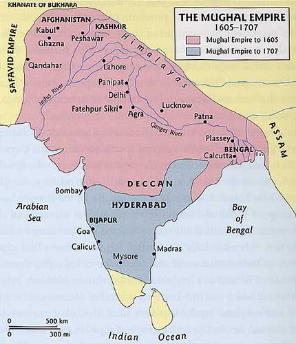

The mughal empire, descened from the mongol empire, was a nation that at 1 point controlled most of India. It is the one of the biggest empires on the Indian subcontinent and was the latest great indian empire.
The Mughals are descended from the Turco Mongols, who are from central Asia. The first emperor, Babur, was ousted from his homeland and set his sights on India. He established a city called Kabul and invaded much of northern India, defeating a kingdom called the Delhi sultanate. Akbar, his grandson and the most famous emperor of this dynasty, conquered most of the empire. One other notable emperor was Shah Jahan, the man who built the Taj Mahal and nearly bankrupted the empire. Eventually a latter emperor named Aurangzeb gained control of most of south India but at his deathbed many parts of the empire were open revolt. This was the beginning of the end of the Mughal Empire.
They were masters in science and technology and made advances in astronomy and created many observatories and observational instruments. They were also had knowledge in alchemy, shown in their ability to produce alkali and soaps. Masters in mathematics they advanced the field of polymath. In war they had an early version of rockets.
They had a unique culture and architecture, especially Shah Jahan who created the Taj Mahal. Other major sites include the red fort, the Agra fort and the Lahore fort. Their influence can be seen in the centralized, imperialistic government, the art of India and new trade routes. The Mughal Empire had freedom of religion, but they still converted people to Islam. This allowed for a diverse culture.